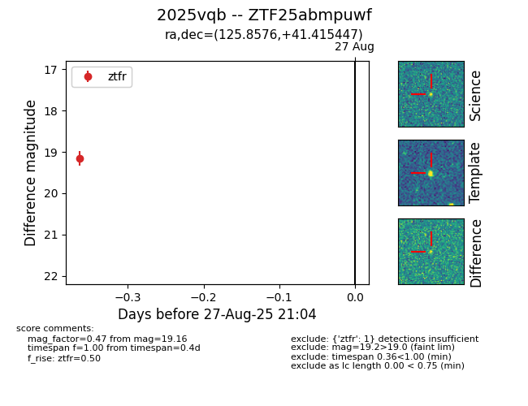

Target 2025vqb at 2025-08-27 21:04, see:
FINK: fink-portal.org/ZTF25abmpuwf
Lasair: lasair-ztf.lsst.ac.uk/objects/ZTF25abmpuwf
ALeRCE: alerce.online/object/ZTF25abmpuwf
TNS: wis-tns.org/object/2025vqb
YSE: ziggy.ucolick.org/yse/transient_detail/2025vqb
alt names
ZTF25abmpuwf (ztf,fink)
2025vqb (tns,yse)
coordinates:
equatorial (ra, dec) = (125.8576,+41.41545)
galactic (l, b) = (179.5348,+34.22232)
photometry
last ztfr=19.16
1 ztfr detections
